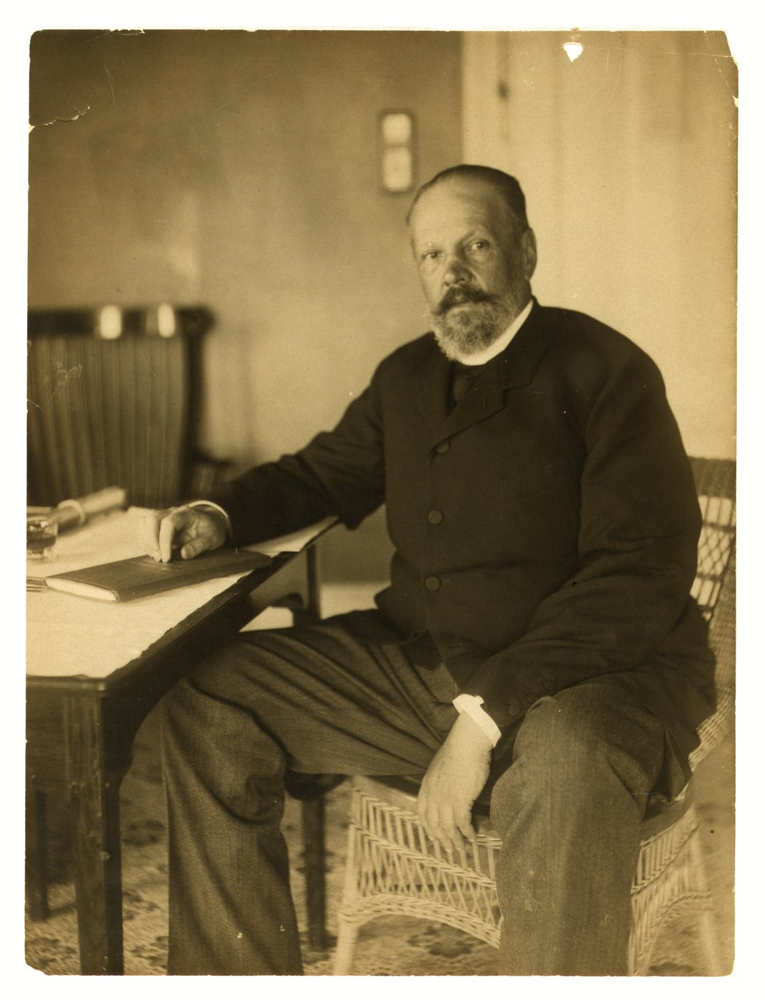

第九章 萨哈林、战争成本与和谈
优势怎样成为和平条件
对马以后，日本已夺取旅顺和奉天、击败俄国远航舰队，有条件维护朝鲜与南满方向的战果。继续战争还会消耗人员、炮弹和信用，新增占领能够换来多少收益，成为决策核心。俄国失去基地和舰队，满洲陆军却仍然存在；这支残存力量与国家纵深，使俄方在谈判中仍可坚持部分条件。〔1〕

1905年6月8日，美国向两国发出同文照会，促请直接谈判。罗斯福把美国的作用表述为促成会面、协助安排时间地点，具体条款由交战国决定。这给双方提供了进入谈判的共同程序，也使接受会面与接受对方条件可以分开处理。〔2〕
谈判准备与军事行动同时进行。日本筹划萨哈林登陆，俄国继续保有防御的选择，双方政府通过指令约束全权代表。已经取得的战果决定谈判起点，对未来战争的预期则影响让步幅度：日本要让俄方相信拒绝妥协会继续受损，俄方要让日本相信，为剩余要求再战可能得不偿失。
萨哈林成为新的议价对象
萨哈林即库页岛，在日本文书中称樺太。它接近日本北部，可以通过海上输送部队攻取，又属于俄国本土领土。满洲的租借地和铁路权益涉及中国主权，萨哈林割让则可以作为俄国自己的领土处分进入交涉。法律地位的差别，使两处军事占领产生不同的外交用途。〔3〕
日方此前已有进攻主张，兵力分散限制其实施。对马以后海上条件改善，和谈又使取得新占领地更有价值。JACAR据战史、档案编成的专题把裁可列于六月十七日，翌日下达独立第十三师团出动命令；七月四日，南部登陆部队从大凑出航，北遣舰队负责护送和支援。〔4〕
七月七日日军在阿尼瓦湾岸登陆，九日占领科尔萨科夫，十日进入弗拉基米罗夫卡。俄军退往林区，日军继续追击，十六日出现南部守军降伏交涉。二十四日，另一部队在岛北登陆，随后取得主要据点，三十一日利亚普诺夫接受投降。南北分路登陆缩短了单一路线北进的距离，俄方则缺少海上援助。〔4〕
占领取得后，地方控制和分散交战仍须处理。岛屿在日方手中，俄方当时又缺乏收复手段，这一事实直接影响维特的判断。他在八月二十一日电报中劝告彼得堡，俄方既拒绝赔款，若完全拒绝讨论岛屿，可能承担谈判破裂的国际责任。军事行动在这里转化为一项具体压力：日本可以选择退还多少占领地，俄国要估量坚持全岛回归的代价。〔5〕
续战资源与政治承受力
日本维持战争，需要把未来税收与信用提前转成可用军费。日本银行后来回顾高桥是清早期一千万英镑筹资任务时，记述伦敦、纽约承销力量的配合。海外借款支持军需采购和战争支出，偿债责任则延续到战后。这个早期筹资数显示融资方式，全部战争成本另有更大的核算范围。〔6〕
战果与信用相互影响。投资者因军事前景改善而愿意承购公债，政府又可以用筹得资金补充资源。日本银行的回顾记述，日本公债相对英国统一公债的利差在这一时期收窄。融资余地扩大，使日本仍有继续战争的工具；新增利息与还本责任，又使政府需要比较再打一仗所能换得的收益。〔7〕
维特判断，俄军或许还能守，已经很难击败日本，再战会给国家带来严重灾难。他在回忆录中又把王朝安全列为急于媾和的理由。沙皇更看重领土和大国体面，坚持拒绝赔款，给维特的让步余地一度十分有限。赴会谈判的人与在彼得堡下令的人，对这场战争还值得付出多少，各有判断。 〔8〕
两国都希望停止成本增长，也都需要向对方显示再战决心。日本的战果支持其提出要求，俄国的陆军与纵深支持其拒绝部分要求。公开立场因此比内部风险判断更强硬，谈判的任务就是找到足以兑现主要利益、又能够获得政府接受的条件组合。
朴次茅斯的最后授权
八月，小村寿太郎与维特在朴次茅斯交涉。朝鲜地位、满洲撤军、租借地和铁路转让逐渐形成共识，萨哈林、赔款、俄舰交付与远东海军限制仍有争执。日本希望赔款补偿支出并确认胜利，沙皇政府则认为付款损及大国威望。维特同时经营欧美舆论，力图让谈判若破裂的责任落在日方。〔9〕
罗斯福在八月二十二、二十三日致金子坚太郎的信中劝日本考虑，为索取赔款继续作战，可能耗费更多钱并造成更多流血；他也警告俄方，拒绝在已有基础上媾和可能招致进一步灾难。斡旋把未来成本放在双方眼前，国际同情与人道措辞则成为促成妥协的外交工具。〔10〕
北萨哈林一度成为改写付款名义的方案：日本退还北半部，俄国支付一定款项。日方希望保留获得资金的机会，俄方仍关心付款的实质。一个完整的占领成果，因而被拆成南北两部分，分别讨论主权、退还与金额。军事占领扩大了可交换的项目，最终边界仍由双方继续议定。〔11〕
代表的活动最终受到政府授权限制。罗斯福书信编印本所收小村电报记述，日方为等待东京最后指示而请求延期；维特则表示，自己的指令已经禁止提出新让步，甚至限制转呈超出范围的建议。沙皇一度宁愿继续战争，东京也须决定放弃赔款后所得是否足够。〔12〕
八月二十九日，双方达成协议，日本接受南萨哈林及大陆既定权益，放弃一般战争赔款；俄国接受部分领土和远东利益损失，保住赔款底线。九月五日正式签约。美国斡旋帮助寻找组合，最后接受仍由两国政府依据自身利益和风险作出。〔13〕
和约配置了哪些权利
《朴次茅斯和约》第二条承认日本在朝鲜的优越政治、军事和经济利益，俄国承诺不妨碍日本采取指导、保护和监督措施。日本扩张在朝鲜的支配力，由此少了一个主要外部障碍。第三条要求日俄撤出满洲、恢复中国行政，并为辽东租借地保留例外；第五、六条转让旅大租借权益和长春至旅顺铁路及附属权益，以中国政府同意为条件。〔14〕
中国在谈判前已提出自己的立场。七月十日，梁诚奉外务部指示通知美国政府，日俄战争发生在中国领土，和约涉及中国而未经事前批准的规定，中国不承认有效。港口与铁路处于第三国领土，这份声明说明，日俄达成协议以后，相关权利仍须进入同中国交涉和落实的过程。〔15〕
第九条将北纬五十度以南萨哈林及邻近岛屿让与日本，边界由委员会实地勘定，双方还约定岛上不筑要塞、两侧海峡自由航行。日本占领全岛后取得南半部主权，俄国恢复北半部领有。第十条允许俄国居民出售财产离开，也允许在服从日本法律的条件下留下，保有财产和经营活动；日方同时保留特定驱逐权。领土交换因而落实为居民面对的法律、财产和居住选择。〔16〕
在谈判条款与军事行动之间，还隔着一些很短的时间。1905 年松山收容所里的俄国军官，把获准外出的最后二十分钟看得比什么都重；四十年后，另一批被拘束的人将在西伯利亚的营地里等待归期。
和约中的“战俘”，也是在异国营门前盯着钟表的人。松山一番町收容所的俄国军官第一次获准自由外出时，下午五点半左右便陆续回到门前。有人看表发现还剩二十多分钟，又掉转自行车骑出去；回来再看，还有十分钟，便再往街上转一圈，或在门前广场骑车。离六点还差两分钟时，他们集合入门。记录这一幕的日方翻译注意到，军官们舍不得浪费初次外出的时间。有人十分感谢这项许可，也有人担心频繁出门会花光钱财，到头来因囊中羞涩而自行放弃外出。自由既是可支配的时间，也有个人负担得起的限度。〔17〕
这样的安排也会卡在一个词上。1905年4月19日的松山水曜会记录中，翻译永野报告，外出规程使用的“宣誓”在俄国军官之间引起争论。按他汇集的解释，这个俄语词带有严肃的宗教含义，常用于向皇帝效忠、入伍和出庭等场合，轻率使用会触犯信仰禁忌。日文管理用语与俄国军官理解的宗教义务发生了错位。永野把这些意见写进水曜会记录，使一项关于外出的规定，同时成为怎样理解和约束被俘者的具体难题。〔18〕
松山军官的外出有时限，许可也掌握在收容机关手中；他们尽量用足这点时间，并通过翻译争取让自己的信仰得到理解。这样的余地，值得在战争史中记上一笔。这批军官的经历自有范围，普通士兵的劳动、病人的救治和其他营所的供给，还各有处境。和约生效以后，收容机关将面对一件更大的事：按约把人交还，让他们终于离开这座营门。
第十三条另行规定战俘交还及费用结算。双方交换经核实的直接收容、维持费用，俄国补付日方支出较多的差额。这是一般赔款之外的专门费用安排，释放、转运和核销仍需要执行机关处理。撤军附约又给满洲撤军规定生效后十八个月的期限，允许保留有数量上限的铁路警备；铁路商业经营与租借地内例外共同安排了战后的持续存在。〔19〕
和约签订，日本取得朝鲜、南满与南萨哈林的重要权益，俄国保住远东的部分存在和继续经营的余地。中国与朝鲜承受的战场破坏和政治损失，并未随日俄停战一同结束。战俘等待交接，居民适应新的管治，纳税者偿还战争留下的债务。两国政府开始安排和平，基地、铁路和边界所联系的人群，也开始承受这场和平各不相同的后果。
本章注释
- 〔1〕 A003，印页135、163—167 ↩
- 〔2〕 A502，6月8日照会 ↩
- 〔3〕 M01，第3、5、6、9条 ↩
- 〔4〕 A503，战斗图表及解说 ↩
- 〔5〕 A003，印页166；A504，印页155 ↩
- 〔6〕 A507，“Beginning of the Bank of Japan’s New York Office” ↩
- 〔7〕 A507，同节 ↩
- 〔8〕 A504，印页154—155、159 ↩
- 〔9〕 A504，印页154—155；A510，会议经过 ↩
- 〔10〕 A505，印页406—408 ↩
- 〔11〕 A504，印页156—158；A505，印页411 ↩
- 〔12〕 A505，印页409—410；A504，印页158—159 ↩
- 〔13〕 A510，会议经过；M01，签署段 ↩
- 〔14〕 M01，第2—6条 ↩
- 〔15〕 A506，文件900 ↩
- 〔16〕 M01，第9—10条及附约第二项 ↩
- 〔17〕 C702，印1184—1185 ↩
- 〔18〕 C701，印1154—1156 ↩
- 〔19〕 M01，第7、13条及附约第一项 ↩